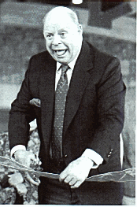
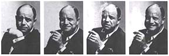
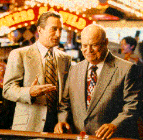

|
Don Rickles
"God put us on this earth to laugh. We're human beings. Jew, gentile, Irish, Negro, Puerto Rican. Laugh at bigotry. Bigots and morons and dummies. People say, 'how can you make fun of religion?' Why not? What's to fear?"
December, 1957. It's two o'clock in the morning. A not-so-famous Rickles is onstage at The Sahara Lounge in Las Vegas, doing his act. He's singled out a lone Mexican sitting up front.
"I'm a Jew, and you're a Mexican," Rickles begins. "I say this from heart: A Negro can move into my neighborhood, you can't." Ten minutes later, he's targeting Canadians, Arabs, Germans, Poles and Jews. The laughter is slow to ripple, largely liquor-induced. "Excuse me sir, what is your nationality? I know, it's a big word. Lady, you here on vacation? And you're sitting next to the Mexican? You've taken your shots? I don't know what this is all about, you annoying woman. Get a job at a fruit stand. Didn't I see you during the war hanging around the embarkation point in a torn sweater? You gotta be a Jew, lady - it's 105 degrees in here and you're the only one with a mink stole. If it weren't for the Mexicans, we wouldn't have filth." Then - to everyone's complete astonishment - Frank Sinatra strolls into the lounge, flanked by Peter Lawford, Sammy Davis, Jr., Joey Bishop, Shirley Maclaine, Henry Silva, and actor Richard Conte. They take a seat near the back, and the room grows silent. Young Master Rickles is temporarily speechless, staring goggle-eyed beyond the hot lights. The stakes have been upped: this unknown comic is now expected to tickle the ribs of an indomitable battery of professional entertainers. Any one of them alone holds a massive ego capable of derailing Don's entire career without so much as an arched eyebrow. "What are you guys, lost?" Rickles blurts. "This isn't the Sands." He instructs a cocktail waitress to get them a drink. "You guys do drink, don't you? Frank, buy them a drink. You got plenty of money." When Lawford tips the waitress, Rickles continues. "Hey that's good. Frank, you got him trained. Now sit down. Sammy, you get permission to be out this late? You can't get negro help like that any more. To have a guy who can sing and dance - and dust." The crowd is silent. Casino bodyguards move to the back, prepared to restrain Sinatra if he loses it. The room is visibly uncomfortable. Collectively, audience members wonder if this is really part of the act.
People are starting to laugh out loud, but the tension remains palpable. Members of the audience - bartenders included - are more than a little freaked out. This is not how a comedian behaves in the presence of the Chairman. How many of Sinatra's buttons will Rickles push? The comedian turns his back on the crowd, addressing the band. "Is Frank smiling? See any guns? He starts shooting, everybody duck." Then he turns back around. "Frank, just make yourself at home and hit somebody."
"Frank, get off your knees, it looks fruity. Richard, help Frank get up. Show him the way out. And don't come back with that riff-raff. Frank, you look terrible. You have to dress better. It's getting embarrassing. You need some clothes? Just ask me." That night, Sinatra became the comedian's number-one fan. Don Rickles was the performer among big-name Hollywood stars, and they flocked by the dozens to be the targets of his insults. To Ernest Borgnine: "Oh my God, look at you. Anyone else hurt in the accident?" To David Letterman: "Who picks your clothes, Stevie Wonder?" To Bob Hope: "What are you doing here? Is the war over?" He opened for Sinatra regularly, like a straight shot of cheap booze designed to make a more expensive drink taste better. His insults and put-downs quickly earned him the nickname Mr. Warmth. He would later become a pallbearer at Sinatra's funeral, carrying the gardenia-strewn casket to and from the church. Don Rickles appears opposite Robert De Niro and Joe Pesci in Casino, directed by Martin Scorsese. He can currently be heard as the voice of Mr. Potato Head in Disney/Pixar's Toy Story franchise. timeline
|
 Comedians
who dabble in racist humor are few and far between.
Comedians
who dabble in racist humor are few and far between.  "Frank, you
need to to go back to the Sands. Sammy, show him the way out. Jesus, looked
who I picked - they follow Sammy, they'll be bumping into walls. Richard, can
I tell you something? Nobody goes to your movies anymore. Seriously, you can't
act. Go home and watch TV like old people. And Frank, you're no spring chicken.
Shirley, how does it feel to be with Frank Sinatra? He's gonna put you in the
movies! Sure he is. Frank, find somebody your own age. Honey, how old
are you? Let me see your ID. "
"Frank, you
need to to go back to the Sands. Sammy, show him the way out. Jesus, looked
who I picked - they follow Sammy, they'll be bumping into walls. Richard, can
I tell you something? Nobody goes to your movies anymore. Seriously, you can't
act. Go home and watch TV like old people. And Frank, you're no spring chicken.
Shirley, how does it feel to be with Frank Sinatra? He's gonna put you in the
movies! Sure he is. Frank, find somebody your own age. Honey, how old
are you? Let me see your ID. " At
which point, Frank Sinatra drops his drink and falls completely out of his chair,
doubled over with laughter.
At
which point, Frank Sinatra drops his drink and falls completely out of his chair,
doubled over with laughter.